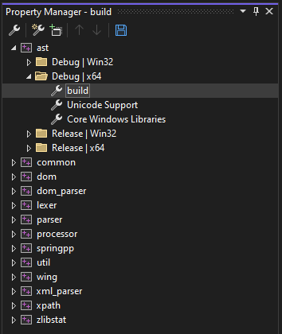
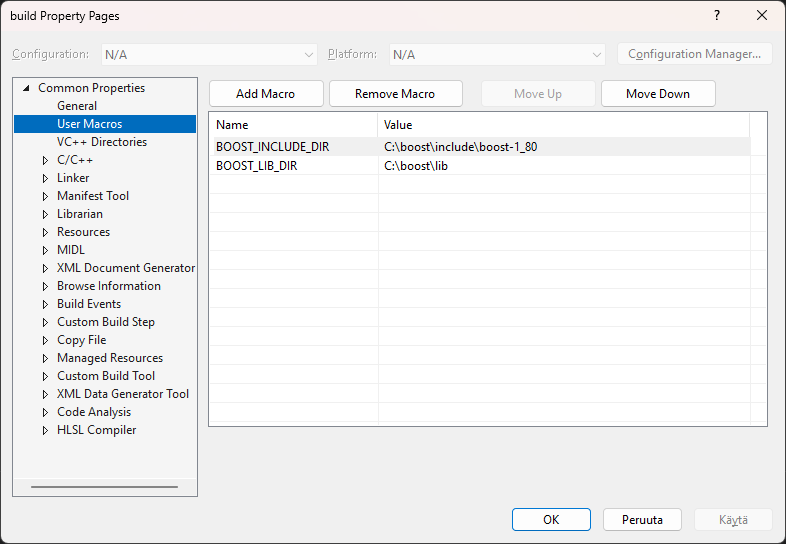

Compiling Spring++ from Source Code
Requirements
Compiling Spring++ requires Microsoft Visual Studio 2022 Community Edition with 'Desktop Development with C++' tool chain installed and Boost C++ libraries installed.
Configuration
- Extract the spring++-0.1.0.zip package to a directory of your choice.
- Open the springpp.sln using Visual Studio
- Select the Property Manager tab from the Solution Explorer.
If the property manager is not shown, you can view it by selecting View | Other Windows | Property Manager menu item.
-
Open for example the Debug|x64 configuration of the ast project:

-
Right-click build and select Properties
-
The build property pages opens.

-
Select the User Macros tab and enter your Boost library paths.
Compilation
- Select the Debug|x64 configuration and build the solution.
- Select the Release|x64 configuration and build the solution.
Installation
Copy the spring++ executables from the x64/Debug directory and
from the x64/Release directory to the bin directory.